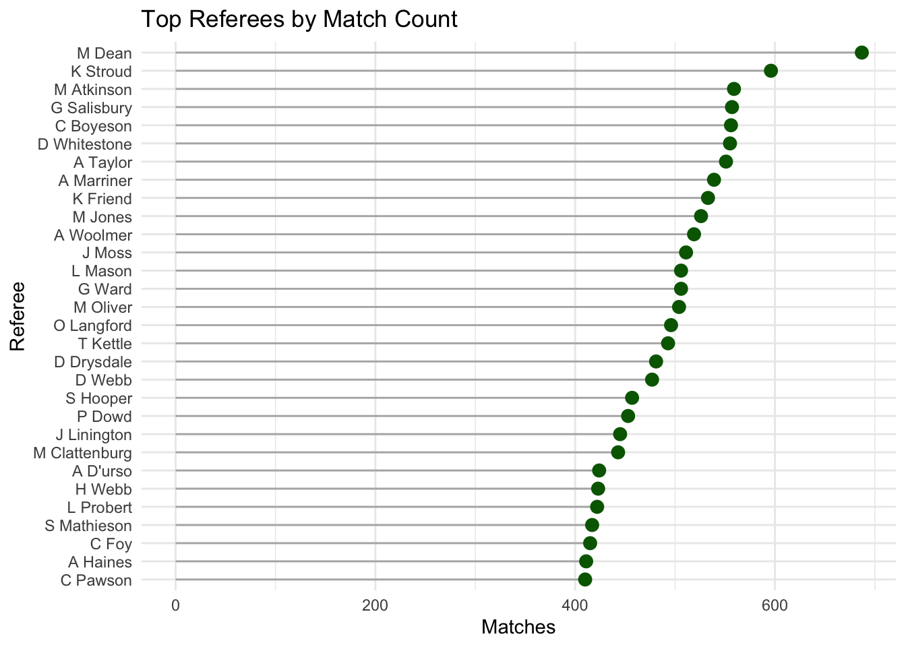
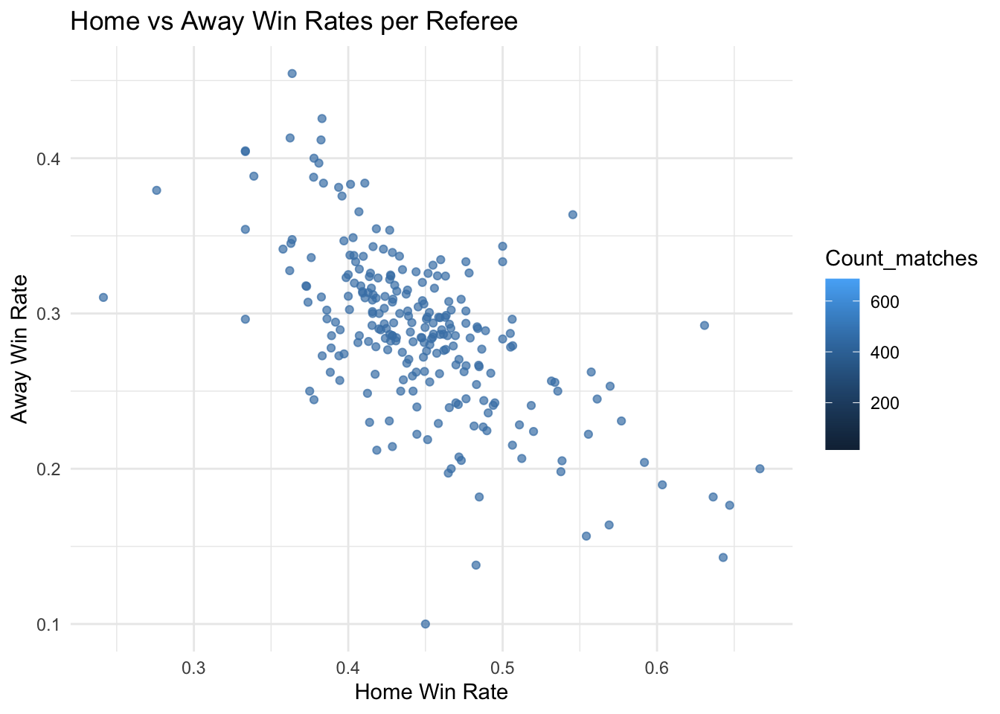
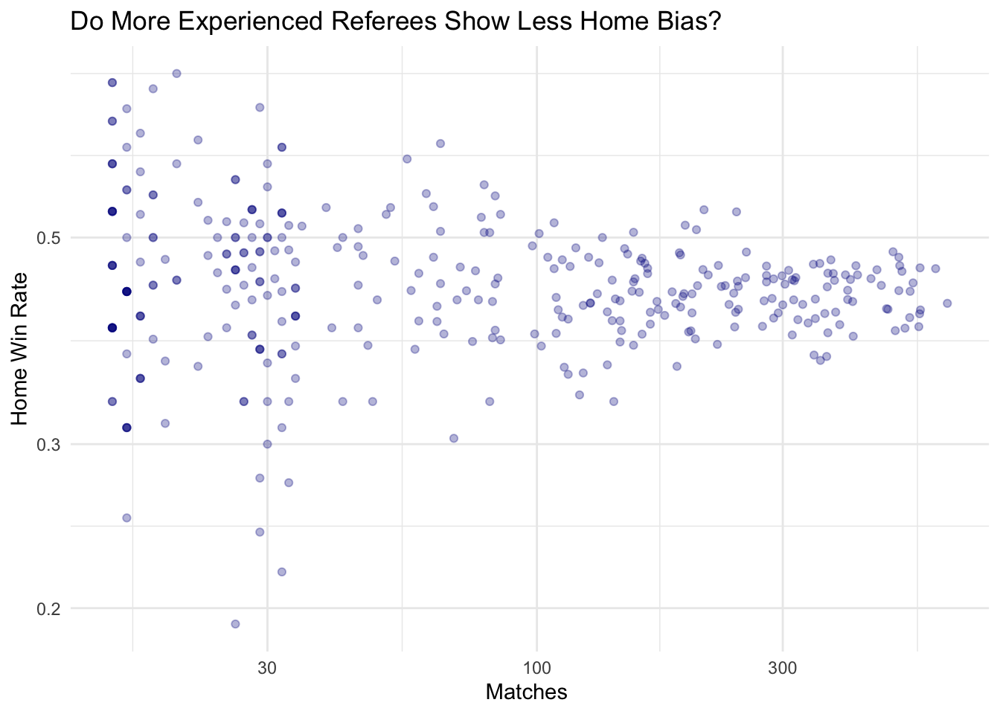
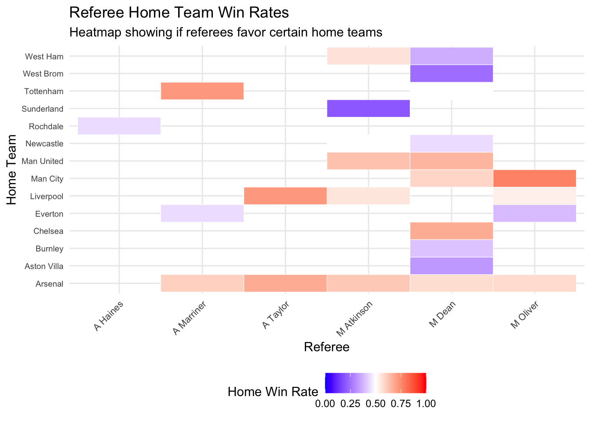
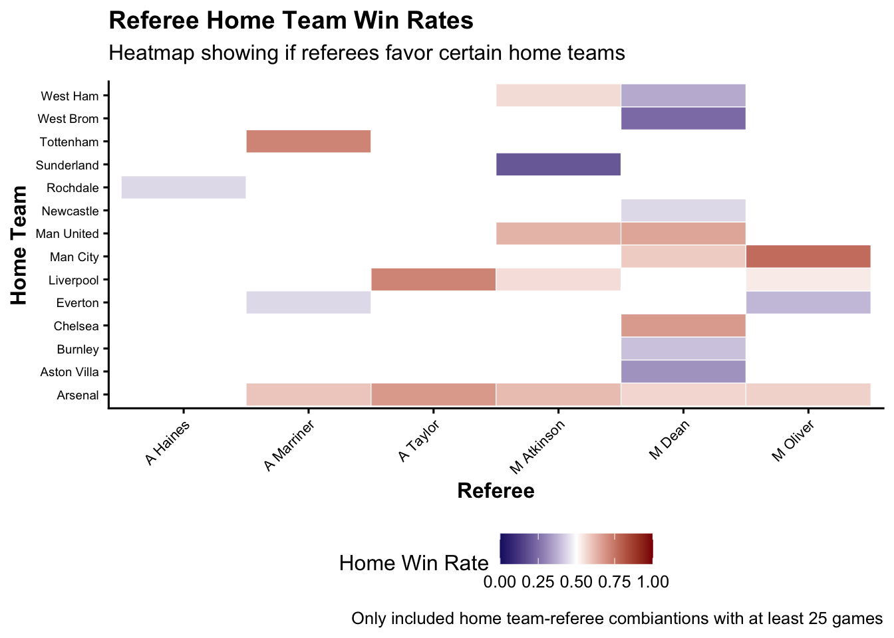
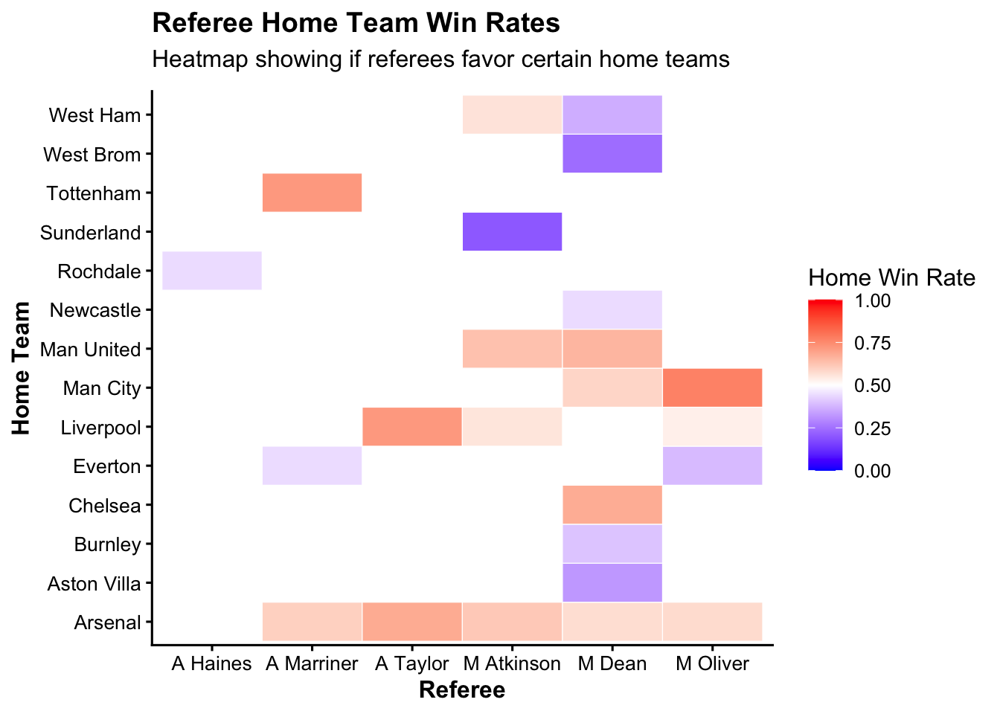

We want to see how soccer has changed through the years in terms of attack and defense. Our hypothesis is that the english football has become more competitive. For proving this hypothesis we will analyze the differences among the teams that conform the Premier League and the lower tiers, the dominance and the results of the matches.
First of all, we know that goals can be a strong indicator to understand this, so we plan to base our first analysis on the average number of goals scored by teams.
Code
library(dplyr)library(lubridate)library(ggplot2)library(RColorBrewer)library(rnaturalearth)library(rnaturalearthhires)library(sf)library(ggrepel)library(readr)library(forcats)library(FactoMineR)library(factoextra)library(plotly)library(tidyr)library(ggalluvial)library(GGally)library(scales)library(vcd)Data_England <-read_csv("https://github.com/luisgomezordoniez/football-soccer/raw/refs/heads/main/data/Data_England.csv")Data_England =Data_England |>mutate(League=case_when( Div=="E0"~"Premier League", Div=="E1"~"Championship", Div=="E2"~"League One", Div=="E3"~"League Two"))#summary(Data_England)Data_England$League <-factor(Data_England$League, levels =c("Premier League", "Championship","League One", "League Two"), ordered =TRUE)my_custom_theme <-function() {theme_classic(base_size =12) +# Start with a built-in theme as a basetheme(plot.title =element_text(size =14, face ="bold"),plot.subtitle =element_text(size =12, margin =margin(b =10)),axis.title =element_text(size =12, face ="bold"),axis.text =element_text(size =10),legend.position ="right" )}Data_England$Year=as.numeric(substr(Data_England$Date,6,9))
Code
# Average goals through the years, by local and away.# Cleveland plots for the average goals by league through the years.premier_full <- Data_England |>filter(Div =="E0")#dim(premier_full)#premier_full |># select(Season, Date, HomeTeam, AwayTeam, FTHG, FTAG) |># head(20)#premier_full |># count(Season) |># arrange(Season) |># print(n = Inf)premier_full <- premier_full |>mutate(Date =dmy(Date))#premier_full |># select(Season, Date, HomeTeam, AwayTeam) |># head(10)#summary(premier_full$Date)premier_full <- premier_full |>mutate(Year =year(Date))#premier_full |># select(Season, Date, Year, HomeTeam, AwayTeam) |># head(12)#premier_full |># count(Year) |># arrange(Year) |># print(n = Inf)premier_full <- premier_full |>mutate(TotalGoals = FTHG + FTAG)#premier_full |># select(Season, Date, HomeTeam, AwayTeam,# FTHG, FTAG, TotalGoals) |># head(10)#summary(premier_full$TotalGoals)premier_full <- premier_full |>group_by(Season) |>filter(n() ==380) |>ungroup()#premier_full |># count(Season) |># arrange(Season)premier_goals <- premier_full |>select(Season, Year, HomeTeam, AwayTeam, FTHG, FTAG, TotalGoals)#head(premier_goals)#summary(premier_goals)premier_goals_yearly <- premier_goals |>group_by(Year) |>summarise(avg_home_goals =mean(FTHG, na.rm =TRUE),avg_away_goals =mean(FTAG, na.rm =TRUE),avg_total_goals =mean(TotalGoals, na.rm =TRUE) )#premier_goals_yearly |># head(15)#premier_goals_yearly |># tail(10)#summary(premier_goals_yearly)premier_goals_yearly |>ggplot(aes(x = Year)) +geom_line(aes(y = avg_home_goals, color ="Home"), linewidth =1) +geom_point(aes(y = avg_home_goals, color ="Home"), size =2) +geom_line(aes(y = avg_away_goals, color ="Away"), linewidth =1) +geom_point(aes(y = avg_away_goals, color ="Away"), size =2) +scale_color_manual(values =c("Home"="#1f77b4", "Away"="#d62728")) +labs(title ="Average Home and Away Goals per Season — Premier League",x ="Year",y ="Average Goals per Match",color ="Team" ) +my_custom_theme()+theme(legend.position ="bottom" )
While the average number of goals by home teams has remained relatively stable since 1993, away teams show a clear upward trend in goals, reflecting more offensive strategies, especially since 2015. This suggests a reduction in the traditional home-field advantage.
Between 1993 and 2010, away teams scored about 1.10-1.15 goals per match, but since 2011 this number has increased to around 1.20-1.25. Starting in 2018, we can observe a sustained raise in away goals, reaching historic highs in 2023 and 2024, when they exceeded 1.45 goals per match.
Home teams have consistently scored between 1.45 and 1.65 goals per match throughout the entire period, with small drops in 2008 and 2015. Recently, in 2023, there was an increase, but not one strong enough to confirm an upward trend.
Home-field advantage has decreased significantly over the years. The recent offensive surge in the Premier League comes mainly from away teams.
Code
premier_full_complete <- premier_full |>group_by(Season) |>filter(n() ==380) |>ungroup()# Proportion of results: H, A, Dresults_yearly <- premier_full_complete |>group_by(Year, FTR) |>summarise(n =n(), .groups ="drop") |>group_by(Year) |>mutate(prop = n /sum(n)) |>ungroup()# Proportion of Match Results per Season — Premier Leagueresults_yearly |>ggplot(aes(x = Year, y = prop, color = FTR)) +geom_line(linewidth =1.2) +scale_color_brewer(palette ="Set2", labels =c("H"="Home win","D"="Draw","A"="Away win"),name ="Result" ) +labs(title ="Proportion of Match Results per Season — Premier League",subtitle ="Only complete seasons (380 matches per season)",x ="Year",y ="Proportion of Matches" ) +my_custom_theme()+theme(legend.position ="bottom" )
Over the past three decades, Premier League results show a decrease in draws, an increase in away-team victories, and relatively stable home-team victories. This suggests that the league has become more competitive and that the traditional home-field advantage has gradually diminished.
3.2 Seasonal trends
Code
library(tidyverse)library(lubridate)Seasons=c("2000/2001", "2004/2005", "2009/2010", "2014/2015", "2019/2020", "2023/2024")# 1. Prepare Datagoals_monthly <- Data_England |>filter(Season %in% Seasons & Div=="E0") |>mutate(MatchDate = lubridate::dmy(Date), # Convert string to DateMonth = lubridate::month(MatchDate, label =TRUE, abbr =TRUE)) |># Filter out rare off-season games (June/July)filter(!Month %in%c("Jun", "Jul")) |># Reorder months to follow the Football Season (Aug -> May)mutate(Month =factor(Month, levels =c("Aug", "Sep", "Oct", "Nov", "Dec", "Jan", "Feb", "Mar", "Apr", "May"))) |>group_by(Month, Season) |>summarise(AvgGoals =mean(FTHG + FTAG, na.rm =TRUE), .groups ="drop")# 2. Plotggplot(goals_monthly, aes(x = Month, y = AvgGoals, group = Season, color = Season)) +geom_line(size =1.2) +geom_point(size =3) +labs(title ="End of Season Madness?",subtitle ="Average Goals per Game by Month",y ="Avg Total Goals",x ="Month of Season") +my_custom_theme()
Code
# Alluvial of the standigns of each league over the last years.target_season <-"2023/2024"prem_season <- premier_full_complete |>filter(Season == target_season)prem_season <- prem_season |>mutate(Date =as.Date(Date))results_long <-bind_rows( prem_season |>transmute( Date,Team = HomeTeam,Opp = AwayTeam,GF = FTHG,GA = FTAG ), prem_season |>transmute( Date,Team = AwayTeam,Opp = HomeTeam,GF = FTAG,GA = FTHG )) |>arrange(Date, Team) |>mutate(Points =case_when( GF > GA ~3L, GF == GA ~1L,TRUE~0L ),GD = GF - GA )results_cum <- results_long |>group_by(Team) |>arrange(Date, .by_group =TRUE) |>mutate(game_number =row_number(), cum_pts =cumsum(Points),cum_gd =cumsum(GD),cum_gf =cumsum(GF) ) |>ungroup()# Ranking after each game weekstandings_by_round <- results_cum |>group_by(game_number) |>arrange(desc(cum_pts),desc(cum_gd),desc(cum_gf), Team,.by_group =TRUE ) |>mutate(Position =row_number()) |>ungroup()max_round <-max(standings_by_round$game_number, na.rm =TRUE)cuts <-sort(unique(c(1, seq(3, max_round, by =3), max_round)))alluvial_df <- standings_by_round |>filter(game_number %in% cuts) |>mutate(Matchday =factor(game_number, levels = cuts),PosFactor =factor(Position, levels =1:20) )ggplot(alluvial_df, aes(x = Matchday, stratum = PosFactor, alluvium = Team, y=1,fill = Team)) +geom_flow(stat="alluvium", lode.guidance ="frontback", alpha=0.65) +geom_stratum(width =0.25, color ="grey30") +stat_stratum(geom ="text", aes(label =after_stat(stratum)),size =3,color ="black") +guides(fill ="none") +geom_text(stat ="alluvium",data = dplyr::filter( alluvial_df, Matchday ==levels(Matchday)[length(levels(Matchday))]),aes(label = Team),size =3,color ="black",hjust =-0.05,position =position_nudge(x =0.2) ) +scale_x_discrete(expand =expansion(mult =c(0.02, 0.20))) +labs(title ="Team Positions Over the Season (Alluvial)",subtitle =paste("Premier League", target_season,"— positions shown every 5 matchdays" ),x ="Matchday",y ="Position",caption ="Source: football-data.co.uk | EDAV Final Project" ) +my_custom_theme()+theme(panel.grid.major.x =element_blank(),panel.grid.minor =element_blank() )
The Premier League is considered an extremely competitive league due to its more equitable distribution of broadcasting revenue, te quality of signings, and the high athletic level of the playeres. Nevertheless, if we look at last season´s table, we can identify three types of teams: those that fight for the top positions, those that remain in the middle of the table, and those that struggle to avoid finishing last. The first ten matches of the 2024 were not definite to predict how the teams would end the season were not enough to predict how the teams would finish; after the tenth match, the die was pretty much cast, and the battle unfolded within each of these three groups.
3.3 Team performance by league over the years
Code
calculate_points <-function(full_time_result, is_home_team) {case_when( full_time_result =="H"& is_home_team ~3, full_time_result =="A"&!is_home_team ~3, full_time_result =="D"~1,TRUE~0 )}# 2. CALCULATE LEAGUE STANDINGS# Home resultshome_results <- Data_England |>select(Season, Div, HomeTeam, FTHG, FTAG, FTR,Tier) |>rename(Team = HomeTeam, GoalsFor = FTHG, GoalsAgainst = FTAG) |>mutate(Points =calculate_points(FTR, TRUE),Venue ="Home" )# Away resultsaway_results <- Data_England |>select(Season, Div, AwayTeam, FTHG, FTAG, FTR,Tier) |>rename(Team = AwayTeam, GoalsFor = FTAG, GoalsAgainst = FTHG) |>mutate(Points =calculate_points(FTR, FALSE),Venue ="Away" )# Combine and calculate standingsall_results <-bind_rows(home_results, away_results)season_standings <- all_results |>group_by(Season, Div, Team,Tier) |>summarise(Played =n(),Wins =sum(Points ==3),Draws =sum(Points ==1),Losses =sum(Points ==0),GoalsFor =sum(GoalsFor),GoalsAgainst =sum(GoalsAgainst),GoalDifference = GoalsFor - GoalsAgainst,Points =sum(Points),.groups ='drop' ) |>group_by(Season, Div) |>mutate(Position =rank(desc(Points), ties.method ="first") ) |>arrange(Season, Div, Position)titles_data=season_standings |>filter(Div=="E0"&Position==1) |>group_by(Team) |>summarise(Titles=n())# Merge titles data with seasons data# Create the plot with highlighted Tier 1 teamsmost_recent_season <-max(Data_England$Season, na.rm =TRUE)current_tier1_teams <- Data_England |>filter(Div =="E0"& Season == most_recent_season) |>distinct(HomeTeam) |>pull(HomeTeam)Data_Teams <- Data_England |>filter(Div =="E0") |>group_by(HomeTeam) |>summarize(Seasons =n_distinct(Season)) |>mutate(# Identify if team is currently in Tier 1Current_Tier1 = HomeTeam %in% current_tier1_teams,# Create fill color based on Tier 1 statusTeam_Type =ifelse(Current_Tier1, "Current Tier 1", "Other Teams") )Data_Teams_Enhanced <- Data_Teams |>left_join(titles_data, by =c("HomeTeam"="Team")) |>mutate(Titles =replace_na(Titles, 0),Current_Tier1 = HomeTeam %in% current_tier1_teams,Team_Type =ifelse(Current_Tier1, "Premier League", "Lower Tiers") )# Plot with titles in labelsData_Teams_Enhanced |>mutate(HomeTeam =fct_reorder(HomeTeam, Seasons)) |>ggplot(aes(x = HomeTeam, y = Seasons, fill = Team_Type)) +geom_col() +geom_col(aes(x = HomeTeam, y = Titles),fill="gold3")+geom_text(aes(label =ifelse(Titles >0, paste0("Titles: ", Titles),"" )),# y = 0.5, # Position at the start of the barhjust =0, size =3.5, color ="black",fontface ="bold") +coord_flip() +labs(title ="Premier League Seasons and Titles",x ="Team",y ="Seasons",fill ="",caption="" ) +scale_fill_manual(values =c("Premier League"="steelblue", "Lower Tiers"="lightsteelblue") ) +scale_y_continuous(expand =expansion(mult =c(0, 0.15))) +my_custom_theme()+theme(legend.position ="bottom")
Code
# Teams in the last season, where were they in the last seasons?## Definition of standings_finalseason_sizes <- premier_full |>count(Season, name ="n_matches")complete_seasons <- season_sizes |>filter(n_matches ==380) |>pull(Season)premier_complete <- premier_full |>filter(Season %in% complete_seasons)seasons_sel <-c("2000/2001", "2005/2006", "2010/2011","2015/2016", "2020/2021", "2023/2024")premier_sel <- premier_complete |>filter(Season %in% seasons_sel)results_long <-bind_rows( premier_sel |>transmute(Season,Team = HomeTeam,GF = FTHG,GA = FTAG), premier_sel |>transmute(Season,Team = AwayTeam,GF = FTAG,GA = FTHG)) |>mutate(Points =case_when( GF > GA ~3L, GF == GA ~1L,TRUE~0L ),GD = GF - GA )standings_final <- results_long |>group_by(Season, Team) |>summarise(points =sum(Points, na.rm =TRUE),gd =sum(GD, na.rm =TRUE),gf =sum(GF, na.rm =TRUE),.groups ="drop" ) |>group_by(Season) |>arrange(Season,desc(points), desc(gd), desc(gf), Team,.by_group =TRUE) |>mutate(Position =row_number()) |>ungroup()teams_first_season <- standings_final |>filter(Season =="2000/2001") |>pull(Team)standings_first <- standings_final |>filter(Team %in% teams_first_season) |>mutate(Season =factor(Season, levels = seasons_sel),PosFactor =factor(Position, levels =20:1) )ggplot( standings_first,aes(x = Season,stratum = PosFactor,alluvium = Team,y =1,fill = Team)) +geom_flow(stat ="alluvium",lode.guidance ="frontback",alpha =0.65) +geom_stratum(width =0.25, color ="grey30") +stat_stratum(geom ="text",aes(label =after_stat(stratum)),size =3, color ="black") +guides(fill ="none") +geom_text(stat ="alluvium",data = standings_first |>filter(Season == seasons_sel[1]),aes(label = Team),size =3, color ="black", hjust =1.05,position =position_nudge(x =-0.2) ) +scale_x_discrete(expand =expansion(mult =c(0.20, 0.02))) +scale_y_reverse(breaks =NULL) +labs(title ="Evolution of 2000/2001 Teams",subtitle ="Premier League — Where did the early 2000s teams end up?",x ="Season",y =NULL,caption ="Source: football-data.co.uk | EDAV Final Project" ) +my_custom_theme()
If we go back 25 years and look at the Premier League standings for the 2000-2001 season, we can clearly see more competitiveness than by analyzing just one season. Of the twenty teams that played in the Premier League twenty-five years ago, only ten remain in the league for the 2023-2024 season. Among them, there are teams like Arsenal, Liverpool, and Chelsea, which have maintained a relatively similar position from 2000 to today; teams like Aston Villa and Tottenham, which climbed in the standings over the years, moving from the eighth and twelfth to fourth and ninth, respectively; and teams that have changed dramatically, such as Manchester United, which held first place in 2000-2001 and is now in eighth, or Manchester City, which was in eighteenth place in 2000-2001 and is now in first place.
Code
# Teams in the season 2023/2024: where were they in the season 2000-2001?teams_last_season <- standings_final |>filter(Season =="2023/2024") |>pull(Team)standings_last <- standings_final |>filter(Team %in% teams_last_season) |>mutate(Season =factor(Season, levels = seasons_sel),PosFactor =factor(Position, levels =20:1) )ggplot( standings_last,aes(x = Season,stratum = PosFactor,alluvium = Team,y =1,fill = Team)) +geom_flow(stat ="alluvium",lode.guidance ="frontback",alpha =0.65) +geom_stratum(width =0.25, color ="grey30") +stat_stratum(geom ="text",aes(label =after_stat(stratum)),size =3, color ="black") +guides(fill ="none") +# Etiquetas en la ÚLTIMA temporada (lado derecho)geom_text(stat ="alluvium",data = standings_last |>filter(Season == seasons_sel[length(seasons_sel)]),aes(label = Team),size =3, color ="black", hjust =-0.05, position =position_nudge(x =0.2) ) +scale_x_discrete(expand =expansion(mult =c(0.02, 0.20))) +scale_y_reverse(breaks =NULL) +labs(title ="Evolution of 2023/2024 Teams",subtitle ="Premier League — Where did today's teams come from?",x ="Season",y =NULL,caption ="Source: football-data.co.uk | EDAV Final Project" ) +my_custom_theme()
When we analyze the teams in the current season and compare their historical positions, we can confirm the behavior observed in the previous plot. We also we see that all the teams ranked from tenth place downward were not competing in the Premier League twenty-five years ago. Most of them were already in the league five years ago, but some were not consistently present before and have only recently been promoted to the Premier League, such as Bournemouth, Brentford, Nottingham Forest, and Luton.
This is a positive sign the league’s competitiveness as it indicates that newly promoted teams can enter the Premier League and compete with the top clubs.
3.4 The English Football System
3.4.1 Locations
We have 116 teams across all the tiers, we can see that London and
Code
{ stadiums <-data.frame(team =c("Arsenal","Aston Villa","Bournemouth","Brentford","Brighton","Burnley","Chelsea","Crystal Palace","Everton","Fulham","Leeds","Leicester","Liverpool","Luton","Man City","Man United","Newcastle","Nott'm Forest","Sheffield United","Southampton","Sunderland","Tottenham","West Ham","Wolves","Cardiff","Swansea","Stoke","Norwich","West Brom","Huddersfield","QPR","Reading","Wigan","Blackburn","Bolton","Birmingham","Portsmouth","Blackpool","Derby","Grimsby","Stockport","Tranmere","Port Vale","Bury","Rushden & D","Hartlepool","Dag and Red","Hereford","Torquay","Boston","Kidderminster","Scarborough","Ipswich","Middlesbrough","Watford","Hull","Coventry","Charlton","Sheffield Weds","Wimbledon","Barnsley","Oldham","Swindon","Oxford","Wrexham","Bristol City","Millwall","Preston","Plymouth","Rotherham","Peterboro","Wycombe","Burton","Milton Keynes Dons","Doncaster","Bristol Rvs","Shrewsbury","Cambridge","Carlisle","Cheltenham","Fleetwood Town","Accrington","Morecambe","Forest Green","Chesterfield","Leyton Orient","Newport County","Barrow","Sutton","Yeovil","Scunthorpe","Colchester","Southend","Gillingham","Walsall","Notts County","Lincoln","Exeter","Northampton","Macclesfield","York","Barnet","Salford","Harrogate","Darlington","Halifax" ),stadium =c("Emirates Stadium","Villa Park","Vitality Stadium","Gtech Community Stadium","Falmer Stadium (AMEX)","Turf Moor","Stamford Bridge","Selhurst Park","Goodison Park","Craven Cottage","Elland Road","King Power Stadium","Anfield","Kenilworth Road","Etihad Stadium","Old Trafford","St James' Park","The City Ground","Bramall Lane","St Mary's Stadium","Stadium of Light","Tottenham Hotspur Stadium","London Stadium","Molineux Stadium","Cardiff City Stadium","Swansea.com Stadium","Bet365 Stadium","Carrow Road","The Hawthorns","John Smith's Stadium","Loftus Road","Select Car Leasing Stadium","DW Stadium","Ewood Park","Toughsheet Community Stadium","St Andrew's","Fratton Park","Bloomfield Road","Pride Park Stadium","Blundell Park","Edgeley Park","Prenton Park","Vale Park","Gigg Lane","Hayden Road","Victoria Park","Victoria Road","Edgar Street","Plainmoor","York Street","Aggborough","McCain Stadium","Portman Road","Riverside Stadium","Vicarage Road","MKM Stadium","Coventry Building Society Arena","The Valley","Hillsborough","Plough Lane","Oakwell","Boundary Park","County Ground","Kassam Stadium","Racecourse Ground","Ashton Gate","The Den","Deepdale","Home Park","New York Stadium","London Road Stadium","Adams Park","Pirelli Stadium","Stadium MK","Keepmoat Stadium","Memorial Stadium","Montgomery Waters Meadow","Abbey Stadium","Brunton Park","Whaddon Road","Highbury Stadium","Crown Ground","Mazuma Mobile Stadium","The New Lawn","Technique Stadium","Brisbane Road","Rodney Parade","Holker Street","Gander Green Lane","Huish Park","Glanford Park","JobServe Community Stadium","Roots Hall","Priestfield Stadium","Bescot Stadium","Meadow Lane","Sincil Bank","St James Park","Sixfields Stadium","Moss Rose","Bootham Crescent","The Hive Stadium","Peninsula Stadium","Wetherby Road","Blackwell Meadows","The Shay" ),lat =c(51.5548,52.5091,50.7352,51.4909,50.8617,53.7891,51.4817,51.3983,53.4387,51.4749,53.7788,52.6201,53.4308,51.8841,53.4830,53.4631,54.9756,52.9392,53.3703,50.9080,54.9144,51.6033,51.5387,52.5901,51.4705,51.6429,52.9881,52.6226,52.5090,53.6499,51.5093,51.4223,53.5463,53.7287,53.5807,52.4759,50.7930,53.8055,52.9225,53.5683,53.4087,53.3779,53.0335,53.5939,52.3338,54.6853,51.5593,52.0649,50.4746,52.9691,52.3800,54.2770,52.0553,54.5828,51.6501,53.7469,52.4497,51.4862,53.4283,51.4287,53.5522,53.5517,51.5647,51.7166,53.0519,51.4402,51.4851,53.7719,50.3804,53.4289,52.5646,51.6210,52.8124,52.0084,53.5186,51.4854,52.6938,52.2039,54.8931,51.9056,53.9248,53.7431,54.0723,51.6427,53.2423,51.5583,51.5873,54.1202,51.3653,50.9328,53.5850,51.9213,51.5458,51.3857,52.5694,52.9467,53.2185,50.7291,52.2359,53.2505,53.9712,51.6190,53.5042,54.0084,54.5194,53.7171 ),lon =c(-0.1064, -1.8848, -1.8383, -0.2877, -0.0837, -2.2302,-0.1910, -0.0854, -2.9663, -0.2215, -1.5707, -1.1499,-2.9609, -0.4465, -2.2003, -2.2913, -1.6215, -1.1309,-1.4704, -1.3995, -1.3884, -0.0660, -0.1650, -2.1308,-3.2031, -3.9345, -2.1764, 1.3080, -1.9546, -1.7681,-0.2312, -0.9715, -2.6534, -2.4883, -2.4654, -1.8767,-1.0560, -3.0475, -1.4475, -0.0381, -2.1643, -3.0768,-2.1793, -2.3023, -0.6128, -1.2185, 0.1559, -2.7161,-3.5432, -0.0345, -2.2384, -0.4120, 1.1565, -1.2185,-0.4016, -0.3958, -1.4984, 0.0366, -1.5005, -0.1983,-1.4674, -2.1386, -1.7766, -1.2223, -3.0039, -2.6416,-0.0505, -2.6896, -4.1755, -1.3533, -0.2319, -0.8122,-1.6251, -0.7554, -1.0851, -2.5855, -2.7483, -1.4720,-2.9157, -2.0722, -3.0335, -2.3364, -2.8530, -2.2858,-1.4284, -0.0153, -2.9818, -3.2201, -0.1989, -2.6644,-0.6974, 0.8879, 0.7061, 0.5518, -1.9961, -1.1444,-0.5487, -3.5222, -0.9200, -2.1158, -1.0543, -0.2796,-2.2906, -1.5173, -1.5593, -1.8624 ))}uk_states <-ne_states(country ="united kingdom", returnclass ="sf")# Filter for England and Wales and group by regionsengland_wales_regions <- uk_states |>filter(geonunit %in%c("England", "Wales")) |>group_by(region) |>summarise(geometry =st_union(geometry))england_wales_regions <- uk_states |>filter(geonunit %in%c("England", "Wales")) |>group_by(region) |>summarise(geometry =st_union(geometry))pos <-position_jitter(width =0.3, seed =2)premier_league_teams <-unique(filter(Data_England, Div=="E0"& Season=="2024/2025")$HomeTeam)# convert stadiums to sfstadiums_sf <-st_as_sf( stadiums,coords =c("lon", "lat"),crs =4326)# count stadiums per region (point-in-polygon)stadiums_by_region <-st_join(stadiums_sf, england_wales_regions, join = st_within) |>st_drop_geometry() |>count(region, name ="n_teams")# join counts back to regionsengland_wales_regions_cnt <- england_wales_regions |>left_join(stadiums_by_region, by ="region")premier_league_teams <-unique(filter(Data_England, Div =="E0", Season =="2024/2025")$HomeTeam)ggplot() +geom_sf(data = england_wales_regions_cnt,aes(fill = n_teams), color ="white", linewidth =0.3) +scale_fill_gradient(name ="Number of teams",low ="lightblue",high ="darkblue",na.value ="grey90" ) +geom_point(data = stadiums, aes(x = lon, y = lat),color ="black", size =2.5, alpha =0.5) +geom_label_repel(data = stadiums |>filter(team %in% premier_league_teams),aes(x = lon, y = lat, label = team),min.segment.length =0, seed =42, max.overlaps =30,size =2.5 ) +coord_sf(xlim =c(-6, 2), ylim =c(50, 56)) +labs(title ="Location of English Football Club Stadiums",caption ="Fill = number of stadiums per region; labels = Premier League 2024/2025 clubs" ) +my_custom_theme()
3.4.2 Tier dynamics
Code
Data_England_Matches=Data_England |>group_by(Season, Div) |>summarise(count=n(),teams=n_distinct(HomeTeam))x=Data_England |>filter(is.na(Tier)==T)# Get unique teams and their tiers by seasonteam_timeline <- Data_England |>select(Season, HomeTeam, Tier, League) |>rename(Team = HomeTeam) |>bind_rows( Data_England |>select(Season, AwayTeam, Tier, League) |>rename(Team = AwayTeam) ) |>distinct(Season, Team, Tier, League) |>arrange(Team, Season)Teams=Data_England |>group_by(HomeTeam) |>summarise(conteo=n(),divs=n_distinct(Tier))Teams=Teams |>filter(divs>=4)selected_teams=unique(Teams$HomeTeam)teams_timeline <- team_timeline |>filter(Team %in% Teams$HomeTeam) |>complete(Season =unique(team_timeline$Season), Team = selected_teams) |>group_by(Team) |>fill(Tier, League, .direction ="downup")current_tiers <- teams_timeline |>group_by(Team) |>filter(Season ==max(Season)) |>select(Team, Current_Tier = Tier)teams_timeline <- teams_timeline |>left_join(current_tiers, by ="Team")# Facet wrap - each team gets its own panelteams_timeline <- team_timeline |>filter(Team %in% selected_teams) |>complete(Season =unique(team_timeline$Season), Team) |>group_by(Team) |>fill(Tier, League, .direction ="down") |>filter(!is.na(Tier))ggplot(teams_timeline, aes(x = Season, y = Tier, group = Team)) +geom_line(color ="steelblue", linewidth =1.2) +geom_point(color ="darkblue", size =2) +scale_y_discrete(limits=rev) +facet_wrap(~ Team, ncol =4) +# 4 columns, 5 rows for 17 teamslabs(title ="Team Performance Timelines (1993-2024)",x ="Season",y ="Tier" ) +theme_minimal() +theme(axis.text.x =element_text(angle =45, hjust =1, size =8),axis.text.y =element_text(size =8),strip.text =element_text(face ="bold", size =9),panel.spacing =unit(1, "lines") )
Across teams, we observe strong positive associations between shots on target and goals scored, as well as between shots on target conceded and goals conceded. However, shots on target generated by a team no meaningful relationship with the goals it concedes, suggesting that offensive productivity and defensive vulneratiblity operate independently.
3.6 Detection of clusters
We know that many of the numerical variables in our dataset are related, so within each league we would like to identify clusters of teams that share similar behavior across seasons. Based on these clusters, we could create indexes and provide explanations for the patterns observed.
library(dplyr)library(tidyr)library(lubridate)library(ggplot2)big6 <-c("Liverpool", "Chelsea", "Arsenal","Man City", "Man United", "Tottenham")df_big6 <- Data_England |>select(HomeTeam, AwayTeam, Date, FTR)|>mutate(Date = lubridate::dmy(Date),Month = lubridate::month(Date, label =TRUE) )|>pivot_longer(c(HomeTeam, AwayTeam),names_to ="HA",values_to ="Team" ) |>filter(Team %in% big6) |>mutate(Team_Result =case_when( FTR =="D"~"Draw", HA =="HomeTeam"& FTR =="H"~"Win", HA =="HomeTeam"& FTR =="A"~"Loss", HA =="AwayTeam"& FTR =="A"~"Win", HA =="AwayTeam"& FTR =="H"~"Loss",TRUE~NA_character_ ) )df_big6_prop <- df_big6 |>count(Team, Month, Team_Result) |>group_by(Team, Month) |>mutate(prop = n /sum(n))df_big6_prop=df_big6_prop |>filter(!Month %in%c("Jun", "Jul")) |>mutate(Month =factor(Month, levels =c("Aug", "Sep", "Oct", "Nov", "Dec", "Jan", "Feb", "Mar", "Apr", "May"))) ggplot(df_big6_prop, aes(x = Month, y = prop, color = Team_Result, group = Team_Result)) +geom_line(size =1) +geom_point(size =2) +facet_wrap(~ Team, ncol =3) +labs(title ="Monthly Result Proportions for Big 6 Teams",y ="Proportion of Results",color ="Result" ) +theme_minimal(base_size =12)
Code
ggplot(df_big6_prop, aes(x = Month, y = Team_Result, fill = prop)) +geom_tile(color ="white") +facet_wrap(~ Team, ncol =3) +scale_fill_viridis_c(option ="magma", direction =-1) +labs(title ="Heatmap of Result Proportions by Month (Big 6 Teams)",x ="Month",y ="Result",fill ="Proportion" ) +theme_minimal(base_size =12)
3.7 Referee analysys, is there bias?
We would like to explore different ways of analyzing referees behavior during matches to determine whether referees are biased toward home teams. We also want to examine if there is any relationship between league results and World Cup outcomes. In addition, we plan to calculate the differences between the probabilities provided by betting houses and the actual outcomes, as well as conduct other complementary analyses.
To Do: Decide which one to get
Code
library(tidyverse)df_clean <- Data_England |>mutate(Referee_Clean = Referee) |># 1. Remove dots explicitly first (e.g., "P. Walker" -> "P Walker")mutate(Referee_Clean =str_remove_all(Referee_Clean, "\\.")) |># 2. Handle the "Lastname, Firstname" format (e.g., "Yates, N" -> "N Yates")# Regex explanation:# ^(.*), -> Capture everything before the comma (Surname)# \s* -> Match any spaces after comma# (.*)$ -> Capture everything after (Firstname/Initial)# \\2 \\1 -> Swap them (Firstname Surname)mutate(Referee_Clean =str_replace(Referee_Clean, "^(.*),\\s*(.*)$", "\\2 \\1")) |># 3. Trim extra whitespace created by the swapmutate(Referee_Clean =str_squish(Referee_Clean)) |># 4. Force to Title Case (e.g., "n yates" -> "N Yates")mutate(Referee_Clean =str_to_title(Referee_Clean)) |># 5. Convert EVERYONE to "Initial Surname" format# Regex explanation:# ^(.) -> Capture the very first character (The Initial)# .* -> Match all the letters in the middle (ignore them)# \s+ -> Match the space before the surname# (.*)$ -> Capture the last word (The Surname)# \\1 \\2 -> Rebuild as "Initial space Surname"mutate(Referee_Final =str_replace(Referee_Clean, "^(.).*\\s+(.*)$", "\\1 \\2"))# --- Check the results ---# This will show you the original vs the cleaned versioncheck_data <- df_clean |>group_by(Referee, Referee_Final) |>summarise(conteo=n())Data_England_Referee=df_clean |>filter(!Referee=="Unknown")|>select(-Referee)Data_England_Referee=Data_England_Referee |>rename(Referee= Referee_Final)Referees=Data_England_Referee |>filter(is.na(Referee)==F )|>mutate(HomeWon=ifelse(FTR=="H",1,0),AwayWon=ifelse(FTR=="A",1,0))|>group_by( Referee ) |>summarise(Count_matches=n(),n_seasons=n_distinct(Season,na.rm=T),n_tiers=n_distinct(Tier,na.rm=T),Home_wins_count=sum(HomeWon,na.rm=T),Away_wins_count=sum(AwayWon,na.rm=T))Referees=Referees |>filter(Count_matches>=15)Referees |>arrange(desc(Count_matches)) |>slice_head(n =30) |># top 30mutate(Referee =fct_reorder(Referee, Count_matches)) |>ggplot(aes(x = Referee, y = Count_matches)) +geom_segment(aes(xend = Referee, yend =0), color ="grey70") +geom_point(size =3, color ="darkgreen") +coord_flip() +labs(title ="Top Referees by Match Count",x ="Referee",y ="Matches" ) +theme_minimal()

Code
Referees |>mutate(home_win_rate = Home_wins_count / Count_matches,away_win_rate = Away_wins_count / Count_matches ) |>ggplot(aes(x = home_win_rate, y = away_win_rate, fill = Count_matches)) +geom_point(alpha =0.7, color ="steelblue") +labs(title ="Home vs Away Win Rates per Referee",x ="Home Win Rate",y ="Away Win Rate",size ="Matches Refereed" ) +theme_minimal()

Code
Referees |>mutate(home_win_rate = Home_wins_count / Count_matches ) |>ggplot(aes(x = Count_matches, y = home_win_rate)) +geom_point(alpha =0.3, color ="darkblue") +scale_y_log10()+scale_x_log10()+labs(title ="Do More Experienced Referees Show Less Home Bias?",x ="Matches ",y ="Home Win Rate" ) +theme_minimal()

Code
Referees_Home_team=Data_England_Referee |>filter(!Referee=="Unknown")|>mutate(HomeWon=ifelse(FTR=="H",1,0),AwayWon=ifelse(FTR=="A",1,0))|>group_by( Referee, HomeTeam ) |>summarise(Count_matches=n(),n_seasons=n_distinct(Season,na.rm=T),n_tiers=n_distinct(Tier,na.rm=T),Home_wins_count=sum(HomeWon,na.rm=T),Away_wins_count=sum(AwayWon,na.rm=T))Referees_Home_team <- Referees_Home_team |>mutate(Home_win_rate = Home_wins_count / Count_matches,Total_matches = Count_matches )# Filter for meaningful combinations (enough matches)significant_ref_team <- Referees_Home_team |>filter(Total_matches >=25) # Only consider referee-team pairs with 5+ matches# Heatmapggplot(significant_ref_team, aes(x = Referee, y = HomeTeam)) +geom_tile(aes(fill = Home_win_rate), color ="white") +scale_fill_gradient2(low ="blue", mid ="white", high ="red", midpoint =0.5, # Average home win ratelimits =c(0, 1),name ="Home Win Rate" ) +labs(title ="Referee Home Team Win Rates",subtitle ="Heatmap showing if referees favor certain home teams",x ="Referee",y ="Home Team" ) +theme_minimal() +theme(axis.text.x =element_text(angle =45, hjust =1, size =8),axis.text.y =element_text(size =7),legend.position ="bottom" )

3.8 Fair play
Note
Creo que debemos hacer algo con los ejes cuando tenemos temporadas. En algunas lo dejamos como Season: 2020/2021 y en otras como año: 2020. Voy a generar desde data England una variable que sea “Year”, sólo hay que ponernos de acuerdo si debería ser el año en que empezó o el año en que terminó la temporada.
Code
library(dplyr)library(tidyr)cards_fouls_yearly <- premier_full_complete |>filter(as.numeric(substr(Season, 1, 4)) >=2000) |>group_by(Season) |>summarise(n_matches =n(),fouls_total =sum(HF, na.rm =TRUE) +sum(AF, na.rm =TRUE),yellow_total =sum(HY, na.rm =TRUE) +sum(AY, na.rm =TRUE),red_total =sum(HR, na.rm =TRUE) +sum(AR, na.rm =TRUE),fouls_per_match = fouls_total / n_matches,yellow_per_match = yellow_total / n_matches,red_per_match = red_total / n_matches,Year =as.numeric(substr(Season, 1, 4)) ) |>arrange(Year)cards_fouls_long <- cards_fouls_yearly |>pivot_longer(cols =c(fouls_per_match, yellow_per_match, red_per_match),names_to ="metric",values_to ="value" ) |>mutate(metric =factor( metric,levels =c("fouls_per_match", "yellow_per_match", "red_per_match"),labels =c("Fouls", "Yellow Cards", "Red Cards") ) )ggplot(cards_fouls_long, aes(x = Year, y = value, color = metric)) +geom_line(linewidth =1.2) +geom_point(size =2) +geom_smooth(method ="loess", se =FALSE, color ="black", linewidth =0.5) +facet_wrap(~ metric, scales ="free_y", nrow =1) +scale_color_manual(values =c("Fouls"="steelblue","Yellow Cards"="gold","Red Cards"="red" ) ) +labs(title ="Fouls and Cards per Match — Premier League",subtitle ="Complete seasons (2000–2024)",x ="Season",y ="Per match" ) +guides(color ="none") +# Oculta la leyenda ya que los facets indican la categoríatheme_minimal(base_size =13) +theme(plot.title =element_text(size =16, face ="bold"),strip.text =element_text(face ="bold", size =12) )

From 2000 to 2024, fouls per match show an overall decreasing trend, especially from 2000 to 2013, followed by a more stable pattern in recent years. This behavior can be related to better playing techniques and to a stricter strategies from referees. When looking at yellow cards over the same period, we observe a constant trend from 2000 to 2020. This suggests that, even though fouls decreased, referees continued issuing yellow cards at similar rates, which is evidence of a stricter interpretation of the rules. This aligns with the fact that the regulations have become stronger and penalize more unsporting conducts. Red cards, meanwhile, have historically been rare events in matches. Although they appear to decrease slightly, they remain at consistently low levels.
Code
library(dplyr)library(ggplot2)library(scales) cards_result_band <- premier_full_complete |>mutate(total_cards = HY + AY + HR + AR,card_band =case_when( total_cards <=1~"0–1 cards", total_cards <=3~"2–3 cards", total_cards <=5~"4–5 cards",TRUE~"6+ cards" ) ) |>filter(!is.na(FTR), !is.na(card_band)) |>group_by(card_band, FTR) |>summarise(n =n(), .groups ="drop") |>group_by(card_band) |>mutate(prop = n /sum(n)) |>ungroup()cards_result_band <- cards_result_band |>mutate(FTR =factor(FTR, levels =c("H", "D", "A")) )ggplot(cards_result_band,aes(x = FTR, y = card_band, fill = prop)) +geom_tile(color ="white") +geom_text(aes(label =percent(prop, accuracy =1)),color ="black", size =3) +scale_fill_gradientn(colours =c("#f7fbff", "#c6dbef", "#6baed6", "#08519c"),limits =c(0, 1), breaks =c(0, 0.25, 0.5, 0.75, 1),labels = scales::percent,name ="Proportion of matches") +labs(title ="Match Result vs. Card Intensity — Premier League",subtitle ="Rows: total cards in the match (yellow + red)",x ="Full-time result (FTR)",y ="Card intensity band" ) +theme_minimal(base_size =12) +theme(panel.grid =element_blank() )

This graph shows the joint distribution between card intensity and full-time result of a match. For all levels of card intensity, most matches are won by the home team. Nevertheless, this home advantage decreases as card intensity rises: home wins drop from 52% in low-card matches (0-1 cards) to 44% in high-card matches (6+ cards). On the other hand, away wins remain practically constant at 28% across all bands, suggesting that this result is not affected by card intensity. Draws also increase along with card intensity, rising from 20% to 28%.